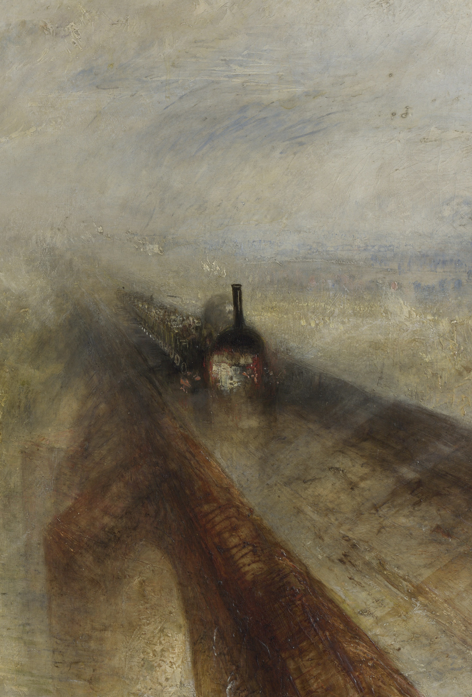
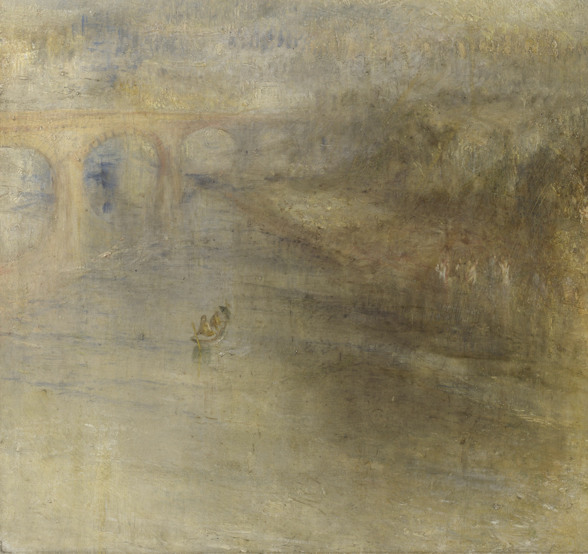

Non è solo un treno. È un mostro che squarcia il velo della natura. Turner ha dipinto questo capolavoro nel 1844, anticipando l'astrattismo di quasi un secolo. La locomotiva non ha bulloni, è fatta di **puro movimento**.

"Il mio compito non è dipingere ciò che vedo, ma ciò che sento."
Guarda come il ponte e il fiume si fondono. Qui la pioggia non cade, la pioggia **si respira**. Turner usava strati sottilissimi di colore per creare questa nebbia dorata che avvolge tutto.
